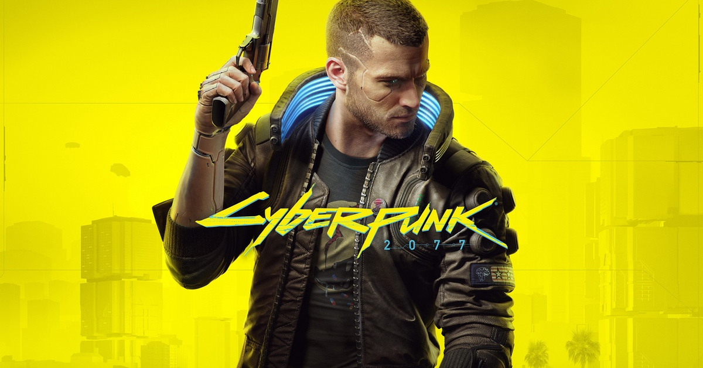

На главную
На главную
Cyberpunk 2077

Минимальные требования:
- ОС: Windows 10
- Процессор: Intel Core i5-3570K или AMD FX-8310
- Оперативная память: 8 ГБ
- Видеокарта: NVIDIA GeForce GTX 970 или AMD Radeon RX 470
- Место на диске: 70 ГБ
Рекомендованные требования:
- ОС: Windows 10
- Процессор: Intel Core i7-4790 или AMD Ryzen 3 3200G
- Оперативная память: 12 ГБ
- Видеокарта: NVIDIA GeForce GTX 1060 или AMD Radeon R9 Fury
- Место на диске: 70 ГБ (SSD)
Тут будет указана ссылка на отзывы со steam или с другой платформы, где находится эта игра. Будет все это работать через API.